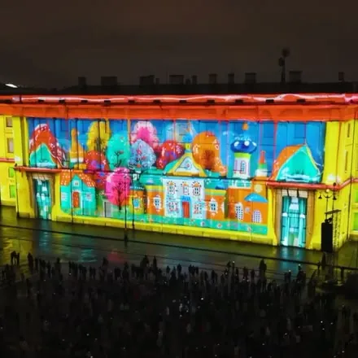
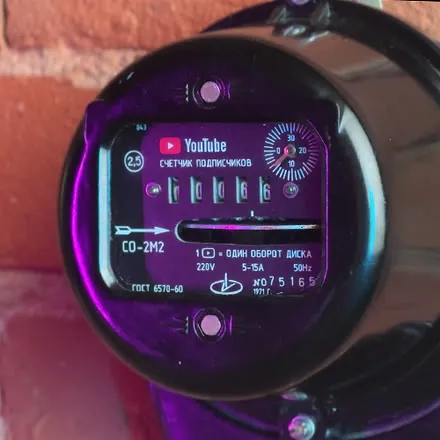
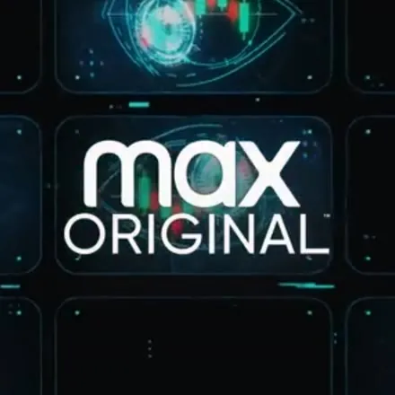
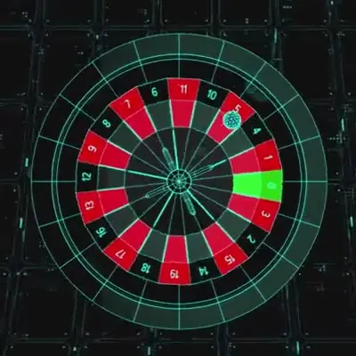
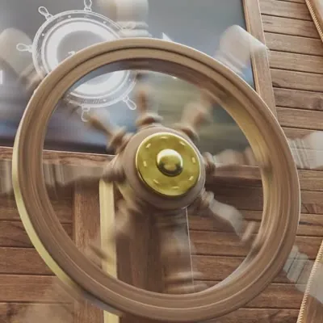
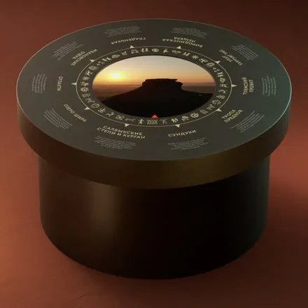

Москва
Работаем по России
Студия братьев Пе́трович
Мы работаем с 2017 года, а с 2019-го делаем мультимедиа для музеев, выставок и событий: интерактивные экспонаты, видео и мэппинг. Разрабатываем концепцию, рисуем, программируем и запускаем на площадке. За это время сделали больше 100 проектов.
Делаем экспонаты, которые отвечают посетителю: он поворачивает стол, ведет корабль штурвалом, двигает экран над чертежами или собирает головоломку, и экспонат показывает видео или включает свет.
Как мы пришли в мультимедиа
Студия начиналась с дизайна: годовые отчеты и маркетинговые материалы для крупных компаний. Отчет «Русала» за 2017 год компания использовала в рекламе еще несколько лет. Потом в студии появились 3D-графика, анимация и программирование, и мы перешли к видео и интерактиву. Первым большим мультимедиа-проектом стал форум «Город образования» в 2019 году.
Кто ведет проекты
Артем Пе́трович, арт-директор. Отвечает за концепцию, дизайн и 3D-графику. Раньше был арт-директором в РБК и журнале FHM.
Арсений Пе́трович, технический директор. Отвечает за программы, электронику и запуск на площадке. Раньше был арт-директором в банке «Русский Стандарт», потом ушел в программирование и анализ данных.
Оба учились в Британской высшей школе дизайна.
Под каждый проект собираем команду: 3D-художники, аниматоры, разработчики, инженеры и монтажники. Над залом Черноморского флота в «Новом Херсонесе» работали больше 20 человек.

Как работаем
Дизайн и техническую часть ведем вместе с первого дня. Если сначала нарисовать экспонат, а потом встраивать его в железо, картинку почти всегда приходится переделывать.
Концепция
Исследуем тему и собираем материалы, а на их основе придумываем концепцию экспоната или экспозиции. Если у музея уже есть архитектурная концепция, развиваем ее.
Контент и дизайн
Сценарий, интерфейсы, 3D-графика и анимация. Берем информацию об экспозиции и экспонате и перерабатываем ее под каждый экран.
Проектирование и инженерия
Проектируем мультимедиа, связываем экраны, датчики, механику и программы. Подсказываем застройщику, как разместить и подключить оборудование.
Монтаж и запуск
Монтируем, подключаем и проверяем мультимедиа на площадках по всей России. Если монтирует подрядчик, готовим для него чертежи и инструкции. Для долгих экспозиций делаем панель управления и обучаем сотрудников.
Когда подключаемся
Можно прийти с идеей, с концепцией архитектора или с готовым проектом. Чем раньше подключимся, тем проще: заранее договоримся с застройщиком, куда встанут экраны и датчики, и проверим экспонат до открытия зала.
Посмотреть услуги →География наших проектов
53°
Средняя широта
наших проектов
Москва
Санкт-Петербург
Калининград
Севастополь
Нью-Йорк
Барселона
Достижения студии

«Страна Света-2025»
Третье место за мэппинг на Дворцовой площади в Санкт-Петербурге.

Фестиваль «Среда»
Счетчик подписчиков YouTube из советского электросчетчика вошел в шорт-лист.

Графика для сериала на HBO Max
Вступительная графика к документальному сериалу «Игры Уолл-стрит».

Статья на No Film School
Американское издание о кино опубликовало наш рассказ о заставке для HBO Max: от раскадровки до рендера.

Музей «Новый Херсонес»
Все интерактивные экспонаты зала Черноморского флота: проектирование, дизайн и программирование.

Выставка «Россия» на ВДНХ
Три интерактивных экспоната для стенда Республики Хакасия.
Клиенты


Видео
Снимаем разборы мультимедиа-проектов, своих и чужих: как устроены, на чем работают и что стоит повторить.
Смотреть на YouTube ↗Расскажите, что хотите показать и когда открытие. Если есть план, сценарий или референсы, пришлите их.
Давайте обсудим вашу идею
Москва, ул. Бауманская, 6, стр. 2 · Политика конфиденциальности